Eldorado Peak
- May 6-7, 2000
Jake and I were pretty fired up about a climb this weekend, once again praying to the weather gods for a chance at that rare warm sun and distant views. Peter was dealing with a string of burglaries at his apartment (yikes), and Steve was out due to injury, so they didn’t make it. But Jake brought Greg, a friend from Rainier he’d met some time back.
Friday night, Jake came to pick me up, and already the “who can go lightest” game was in play. Thanks to my birthday present of a great Mountain Hardware down sleeping bag (i love you, Kris!) I could fit a spare pair of socks into that stuff sack without taking any more room. No helmet, a very small headlamp, the 8.5 mm rope, and based on the large amount of snow out there, only one snow anchor each and no crampons. One stove for the three of us, and to save time, Jake and I brought all cold food, we’d only need to melt water.
We slept at the trail-head Friday night in rain/slushy snow. Greg’s truck was there, and we met him in the morning. A retired former high school principal, Greg contributed fascinating stories about life in Alaska. He’s recently written a book about the NEA.
Jake and I were up at 5:30 and ready to walk at 6:30 but Greg seemed to have a million things to do! He made coffee, repacked equipment, had two breakfasts and underwent a major blister-prevention program that involved wrapping each foot entirely in gauze, then applying various nostrums and cures. Noticing our pacing, he finally said with some dismay: “guys, I don’t know what to tell you here, but I’ve got about an hour to go!”
At this I relaxed my ridiculous “trail Nazi” stance. Friends know me for putting my gaiters on before I leave the house! I love to have it all together, pull out the pack and slam the car door. But I often pay for this efficiency by riding home a wet, shivering creature.
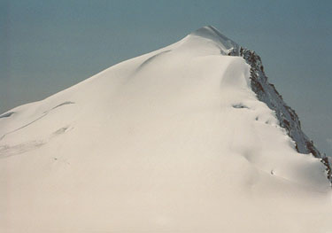
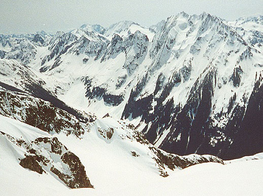
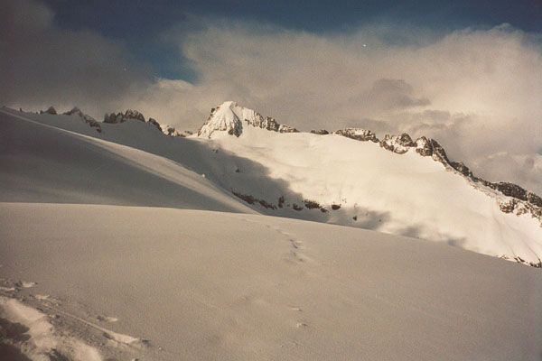
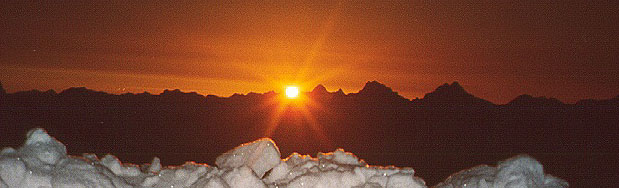
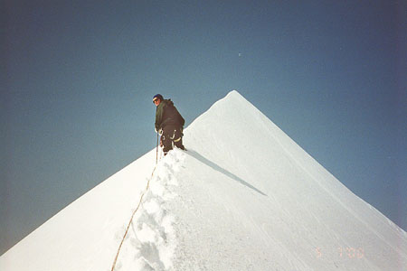
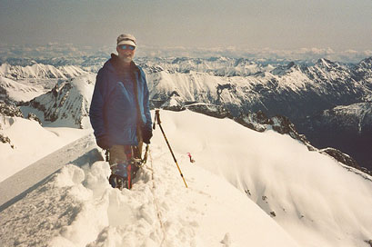
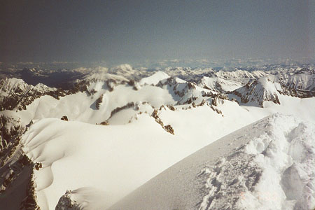
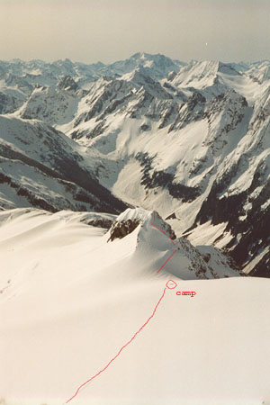
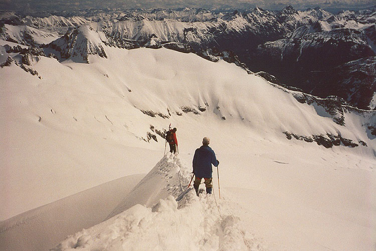
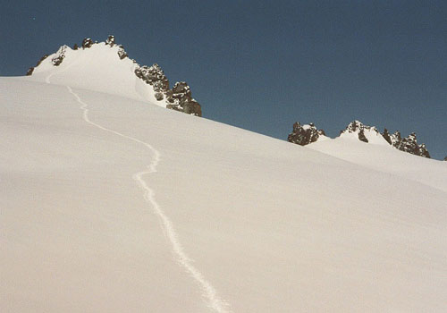
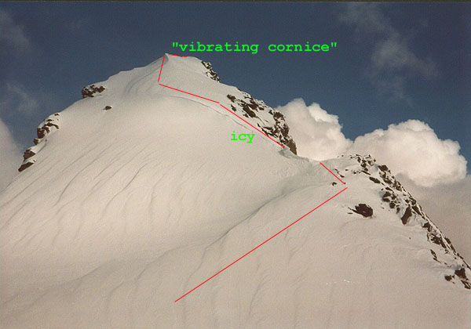
So anyway, soon we crossed the handy “log over river” and climbed the extremely steep trail through forest. It was a wet, drippy forest, as the morning was warm and snow melted constantly high in the trees. I was very eager and full of energy, so pretty soon I got ahead of Greg and Jake. Occasionally I’d hear snippets of their conversation, usually along the lines of Federal Housing Authority projects, or something equally fascinating! I came to the first boulder-field, promptly ignored the common advice, and scrambled straight up on rotten snow bridges. Coming to my senses, I found tracks in snow on the right, and followed these up in and out of snow patches. Views to Cascade Pass came and went in a cloudy gloom, but the patches of sun were generally increasing and felt good.
I followed a skin track from a ski camp low in the basin, and this led me all the way to the ridge with Roush Creek Basin. On this ridge, I met the skiers, who were glumly voting whether to continue to the summit or spend the day skiing in the basin. I decided to wait for Greg and Jake here, as I was getting lonely. Sitting nearby, I cast a mental vote for “yes,” so I could follow their track and save some energy. I knew it would be deep going if I passed them!
It started to snow, and this heavily influenced the vote. I watched them telemark down the basin, suppressing a few belly-laughs at the wobbly belly-flops that ensued! Boy, was this fun or what? Eventually, two specs arrived in the distance and talked with the skiers. There were my buddies! But I was getting cold, so I descended the gully and pressed on. Here, the clouds came in and I could only just make out dim outlines of the rocky ridge on my right. I decided to keep going, as long as I could see that for reference. In and out the clouds came, often snowing heavily on me. It was so quiet in my little world…
I was surprised to not even be tired, despite breaking trail in the deep snow (I had snowshoes on). I realized that Eldorado could be climbed in a day fairly easily. Two years before, Steve and I had expressed disbelief at a fanny-pack-clad man who said he did that. Laboring under our 60 pound packs, we couldn’t imagine it then.
I could just see my companions behind me as I reached the flat, beautiful area of the \index{Inspiration Glacier} Inspiration Glacier. Only I couldn’t see a thing, and it started snowing HARD! Trying to walk a straight line, I traveled a ways farther and dropped the pack. Stomping out an area, I got the bivy sack out, and the sleeping pad into it. The wind tried to take it away, and an annoying amount of snow got inside. Finally, the down bag was in, and I secured it all to the snow.
Looking back, I saw that my tracks to this place were completely covered, and I still couldn’t see a thing. “Great,” I thought, “they won’t know where I am in this whiteout.” I kind of felt my way back, placing ski poles at intervals so I wouldn’t lose my camp. Eventually, Jake and Greg arrived and at that moment, the clouds and snow lifted, revealing a totally new world of powder sugar and some kind of peanut brittle here and there! The long gentle ridge of Eldorado seemed to say “Welcome!”
We decided to wait until morning to summit, and Jake took the lead in enlarging and deepening our camp. Three foot high walls protected us from the southwest wind. Greg fired up the stove, making some nice hot water for our sleeping bags. We talked about everything under the setting sun, then continued in this vein as the stars grew brilliant. Jake just would not leave us alone about a satellite he kept seeing! I had taken out my contacts, so the stars were kind of soft. Finally, after some philosophy, sleep took us.
The morning was cold, and my boots were frozen. Jake and I had to beat on them in an attempt to loosen the tongue so I could get my foot in. I wiggled my toes constantly most of the morning to continue the thawing process. From now on, they go in the bivy sack with me!
Jake plowed the trail all the way to the spectacular ridge. I spent a lot of time looking around and soaking in the array of mountains. We stayed roped up the whole way, pretty amazed by how far we had come. It’s really neat to see a line in the snow marching back to a distant, pinpoint camp on the glacier’s edge! We were cautious about the snow conditions, keeping left on the gentle ridge where the snow was shallow and less steep. Greg and I dropped our packs for the final climb from the notch, and I led up without snowshoes on the virgin slopes of the final ridge. Like a knife edge, it was! One foot on each side, looking down to valleys miles apart from each other. It was both easy and exhilarating. Where the ridge flattened and turned down, we stomped out a platform, and hung out for a while. The sky was blue, and the only clouds we could see were far to the west and south, over Rainier and part of the Olympics. A summit handshake (I love that, I always feel like some Victorian mountaineer, hurrying down to tea!), and we headed down. Greg had been worried about climbing right on the ridge-top, but was pleased with the security we got by doing that. The slopes on either side were becoming mushy.
After a few minutes of plunge running, we unroped at the base of the ridge and said goodbye to Greg, who needed to return early to catch a ferry. He was soon out of sight. Jake and I rearranged the rope, and headed over to the \index{Tepah Towers} Tepah Towers, not sure exactly what we wanted to do. Austera Peak looked too far away to climb comfortably in a day, so we settled on one of the leftmost towers. It got very hot, and the wind died for a while, but we kept plodding gently upward. It was great to get a view of Eldorado from the other side. A massive fracture avalanche had occurred here, exposing a large crevasse on the upper slopes. At our chosen double-summited tower, we climbed a short bit of steep snow to a rock/snow boundary, then crabbed up, then under a bulge in the rock. The final exposed 5th class climb didn’t look very attractive, with it’s sloping snowy ledges, so we stopped here. A short glissade brought down some deep troughs of snow.
We decided to head back to camp, then climb the ice-cream-cone snowy tower that dominated that area. It looked beautiful in the morning light, and had sculpted lines of drifted snow, giving it a seashell appearance. We packed up, and Jake started climbing, gaining a rocky notch right of a cornice. He turned left, climbing up a steeper icy section. Perhaps this was where we’d regret leaving the crampons at home? He continued straight up, getting very uncomfortable with the exposure and the icy snow. Backing off just 15 feet before the summit, he tried again around to the left. This short traverse was a good idea, because Jake could now ascend the summit ridge on good snow. I came up behind, noticing that he’d saved the “black licorice surprise” (ie, something distasteful) for me to find out for myself! The ridge culminated in a slightly overhanging cornice over an evil snow/rock gully. Before I realized this, I was climbing on it! Slamming my ice ax home, I watched the surrounding snow “vibrate” tellingly. Getting onto all fours, I delicately finished the traverse, commiserating with a relieved Jake at the summit. We didn’t spend long in this precarious position (I nearly knocked off a boulder, not that anyone was around…), and were back at our packs in 15 minutes.
Down, down ever down. It’s easy on snow! 3000 feet of descent passed quickly, then slippery snow on the boulder-field slowed us down again. Holes were opening up, and swallowed us each a few times. In the forest, we met an AAI guided group with monster packs heading up for a week. I was finally getting tired, and stopped to rest for the first time about 1200 feet above the car. Jake kept on, and when I emerged, he had the car all ready to pick me up after the log crossing. I changed clothes, and felt like a new man.
On the way home, we stopped at a bar, and got laughed out of there because Jake wore his down booties. “Nice socks,” said a “Skeeter”-like member of the gloom! But we found a friendlier place to get some good beer, and toasted another great, fun trip to the wilderness!
Epilogue: the next week it rained harder in Redmond than I’d ever seen. The weather was terrible, and I felt for the poor clients stuck in their tents up in Eldorado Basin. The weather improved Friday.